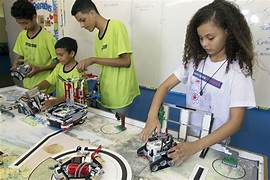

Nosso projeto

O ramo da robótica é extremamente amplo. Muitas empresas passaram utilizar o serviço de IA para solucionar problemas, agilizar processo e entender dados. Por outro lado, a robótica voltada ao aprendizado vem ganhando notoriedade devido aos seus diversos benefícios aos jovens que desde cedo tem a oportunidade de ter esse contato, desenvolvendo seus conhecimentos e aprendendo outras áreas que podem colaborar muito no futuro profissional deles.
Por isso, apresentamos nossa empresa que tem como objetivo utilizar a robótica para fins educacionais, prezando por sustentabilidade e segurança. Pense comigo, atualmente necessitamos urgentemente de medidas que sejam mais sustentáveis e em contrapartida, sabemos que o futuro depende da tecnologia. Então por que não misturar essas duas coisas em só um projeto?!